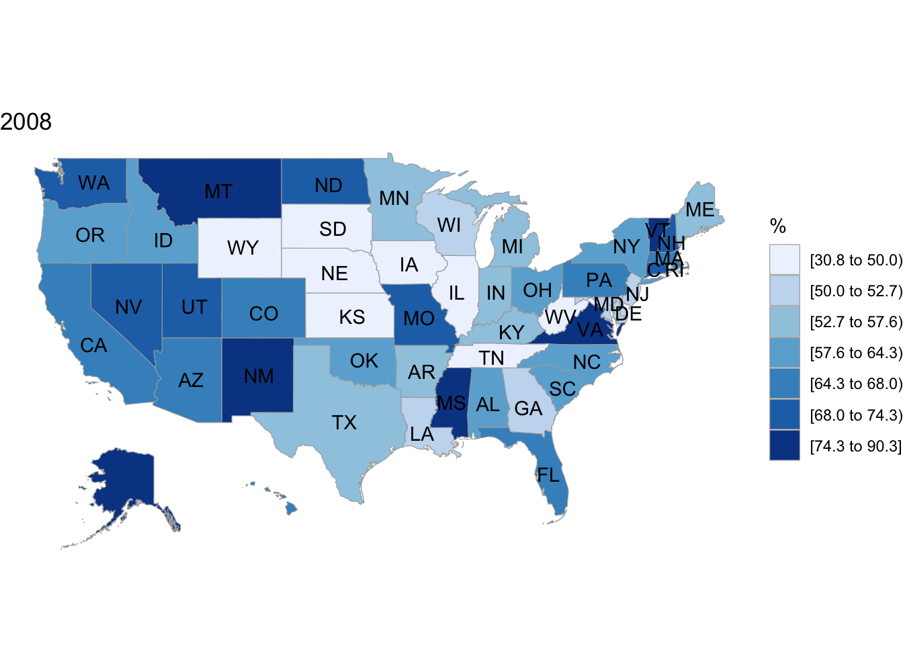
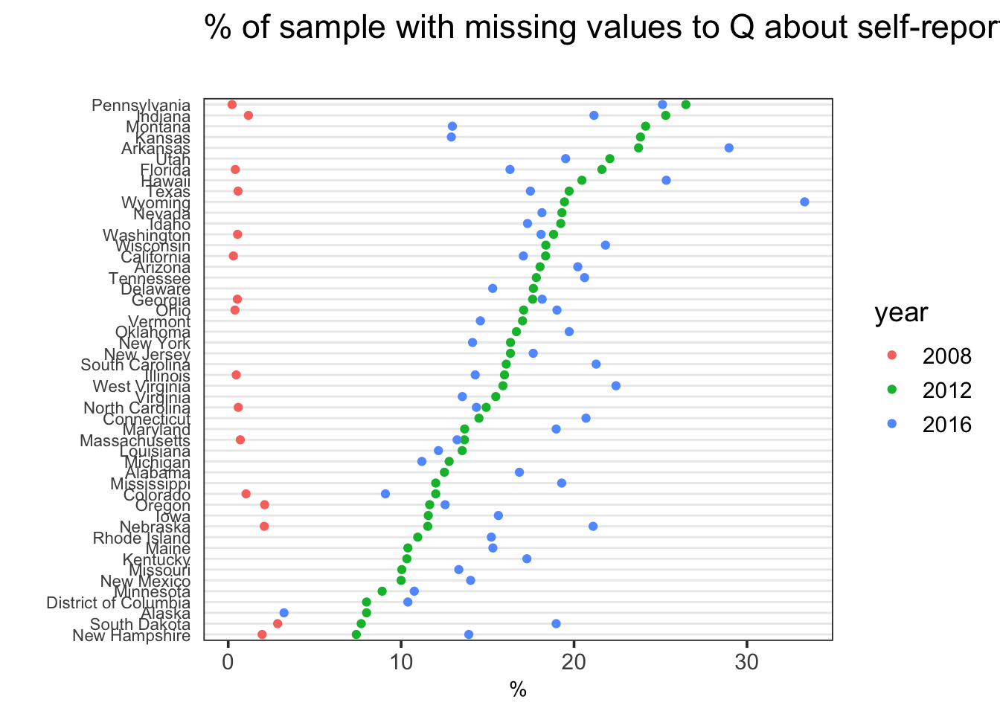

Chapter 5 Results
## # A tibble: 6 x 5
## # Groups: state, year [6]
## state year turnout_self01 n freq
## <chr> <fct> <int> <int> <dbl>
## 1 Alabama 2008 1 60 0.583
## 2 Alabama 2012 1 158 0.778
## 3 Alabama 2016 1 180 0.744
## 4 Alaska 2008 1 13 0.812
## 5 Alaska 2012 1 20 0.870
## 6 Alaska 2016 1 20 0.667##
## 0 1
## 9118 27286## # A tibble: 6 x 5
## # Groups: state, year [6]
## state year turnout_self01 n freq
## <chr> <fct> <int> <int> <dbl>
## 1 Alabama 2012 NA 29 0.125
## 2 Alabama 2016 NA 49 0.168
## 3 Alaska 2012 NA 2 0.08
## 4 Alaska 2016 NA 1 0.0323
## 5 Arizona 2012 NA 55 0.180
## 6 Arizona 2016 NA 94 0.2025.1 Are there state-level variations in over-reporting?


 For year 2016, it seems that over-reporting rates tended to be higher in coastal states, and relatively lower in the inner states. The pattern is not repeated in previous years, however, as the earlier maps indicate.
For year 2016, it seems that over-reporting rates tended to be higher in coastal states, and relatively lower in the inner states. The pattern is not repeated in previous years, however, as the earlier maps indicate.
 The cleveland plot of overrporting rates allows us to see the range of over-reporting across states for each year, as well as to identify trends across years. While the share of the sample claiming to have voted does not form a tight band around the average at state-level, we can see that there is a pattern over time; over-reporting rates were much lower in 2008, whereas the blue dots lying to the right of green suggest that the values for 2016 in generally tended to be higher than in 2012.
The cleveland plot of overrporting rates allows us to see the range of over-reporting across states for each year, as well as to identify trends across years. While the share of the sample claiming to have voted does not form a tight band around the average at state-level, we can see that there is a pattern over time; over-reporting rates were much lower in 2008, whereas the blue dots lying to the right of green suggest that the values for 2016 in generally tended to be higher than in 2012.
 This plot shows that the share of respondents with missing values for the self-reported turntout (NA) shows a correlation with state. The green and blue dot roughly suggest that a state with a higher overreporting rate in 2012 also tended to have higher rate in 2016. Notice also the very low NA values for 2008. Many of the states also did not have a single NA, which is indicated by the missing red dot for at state level. This likely suggests that there was a change in the way the survey was conducted. It might not have been possible to proceed with the survey without answering the question in 2008, but that this practice changed in subsequent years. The map and the cleveland plots combined suggest that the state-level information aren’t significant predictors of over-reporting. In any case, any discrepncies that are observed across states are likely to be attributable to administrative errors, rather than “cultural” variation in the likelihood that an individual would feel pressured to lie about not having voted. On that note, next we look at some of the demographic and political traits of individuals that may explain over-reporting.
This plot shows that the share of respondents with missing values for the self-reported turntout (NA) shows a correlation with state. The green and blue dot roughly suggest that a state with a higher overreporting rate in 2012 also tended to have higher rate in 2016. Notice also the very low NA values for 2008. Many of the states also did not have a single NA, which is indicated by the missing red dot for at state level. This likely suggests that there was a change in the way the survey was conducted. It might not have been possible to proceed with the survey without answering the question in 2008, but that this practice changed in subsequent years. The map and the cleveland plots combined suggest that the state-level information aren’t significant predictors of over-reporting. In any case, any discrepncies that are observed across states are likely to be attributable to administrative errors, rather than “cultural” variation in the likelihood that an individual would feel pressured to lie about not having voted. On that note, next we look at some of the demographic and political traits of individuals that may explain over-reporting.
5.2 Demographic and political traits of respondents
 Those with higher level of education are more likely than others to over-report turnout. While it’s possible that this population also votes at a higher rate, the underlying data only look at those for whom there is no record of having voted, and the mosaic plot indicates that this pattern is found commonly in female as well as male respondents. We can also deduce that at each level of income males over-report at slightly higher rate than do women, but that the difference across gender categories are smaller than the differences across educational levels.
overreporting by strong partisanship and party affiliation
 Now we look at how overreporting rate differs by party affiliation, and It shows that the overall pattern of over-reporting is similar for both female and male, but that on average, men are marginally more likely to overreport, regardless of their political affiliation. What is especially interesting is the fact that Independents are less likely than both Democrats and Republicans to overreport, and that overrepoting rate is especially low for those who responded that they were “Unsure” about their political affiliation. In other words, the stronger the political affiliation/identity, the more likely an individual is to say that they voted when in fact they did not. There may be a number of reasons for this behavior. Those who have strong interest in politics are likely to recognize the importance of voting, and conditional on not having voted, the guilt of not having done so and the embarrassment of others finding out would weigh in heavier on this population than others for whom it doesn’t matter as much.
Now we look at how overreporting rate differs by party affiliation, and It shows that the overall pattern of over-reporting is similar for both female and male, but that on average, men are marginally more likely to overreport, regardless of their political affiliation. What is especially interesting is the fact that Independents are less likely than both Democrats and Republicans to overreport, and that overrepoting rate is especially low for those who responded that they were “Unsure” about their political affiliation. In other words, the stronger the political affiliation/identity, the more likely an individual is to say that they voted when in fact they did not. There may be a number of reasons for this behavior. Those who have strong interest in politics are likely to recognize the importance of voting, and conditional on not having voted, the guilt of not having done so and the embarrassment of others finding out would weigh in heavier on this population than others for whom it doesn’t matter as much.
5.3 Does the size of our social network predict over-reporting?
Similar to the demographic variables surveyed above, one would wonder, does having a large/strong social network influence how likely you are to over-report? While there are no perfect measures of social network, two variables included in the CCES stand out: (1) length of residency at current address and (2) frequency of church attendance. There are caveats that we need to take into consideration of course. If I moved to a new address, but that new location is wiithin my old neighborhood, having only lived there for a month doesn’t mean I have weak ties to my neighbors. Similarly, many people don’t there are people who don’t have any religious social network, but are nonetheless are very tightly embedded in their local social network. To deal with the second potential criticism, I limit the extrapolation I do on the church variable to “church-goers.” In other words, whatever conclusion I draw shall be limited to those who would consider going to church at any point vs. those who are not Christians, or would never consider going to church.
##
## 1 to 2 years 1 to 6 months 2 to 6 months 3 to 4 years
## 6262 891 2751 5942
## 5 or more years 7 to 11 months Less than 1 month
## 23712 2151 524##
## Less than 1 month 1 to 6 months 7 to 11 months 1 to 2 years
## 524 891 2151 6262
## 3 to 4 years 5 or more years
## 5942 23712## [1] "Less than 1 month" "1 to 6 months" "7 to 11 months"
## [4] "1 to 2 years" "3 to 4 years" "5 or more years"
##
## A few times a year Don't know More than once a week
## 6424 534 3448
## Never Once a week Once or twice a month
## 11103 7063 3509
## Seldom
## 10177## [1] "More than once a week" "Once a week" "Once or twice a month"
## [4] "A few times a year" "Seldom" "Never"
## [7] "Don't know" - d) by election cycle; general election including presidential vs. off yr etc. (election specific variables)
- e) turnout; margin of elections (This data will come from the MIT Elections Data) (if time allows)
- d) by election cycle; general election including presidential vs. off yr etc. (election specific variables)
- e) turnout; margin of elections (This data will come from the MIT Elections Data) (if time allows)